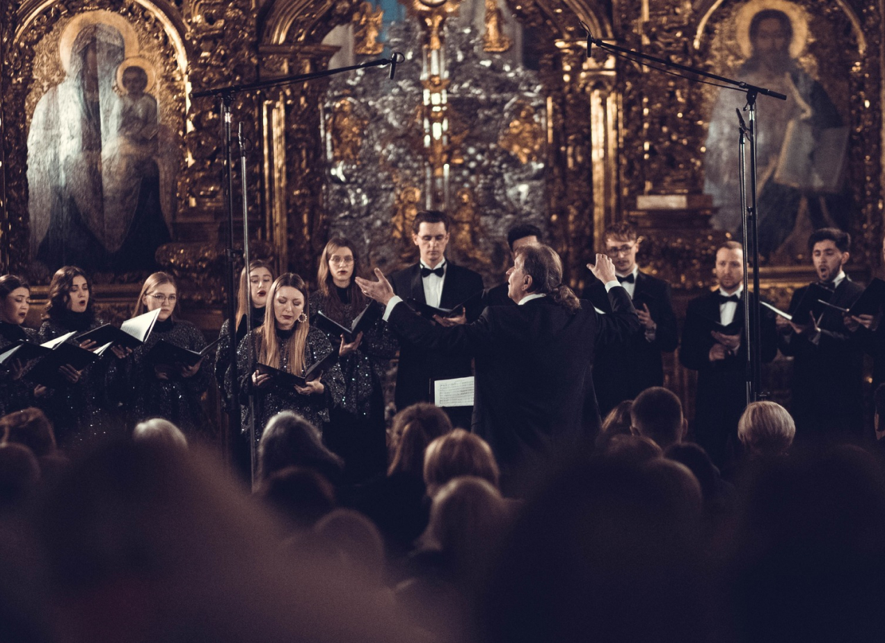
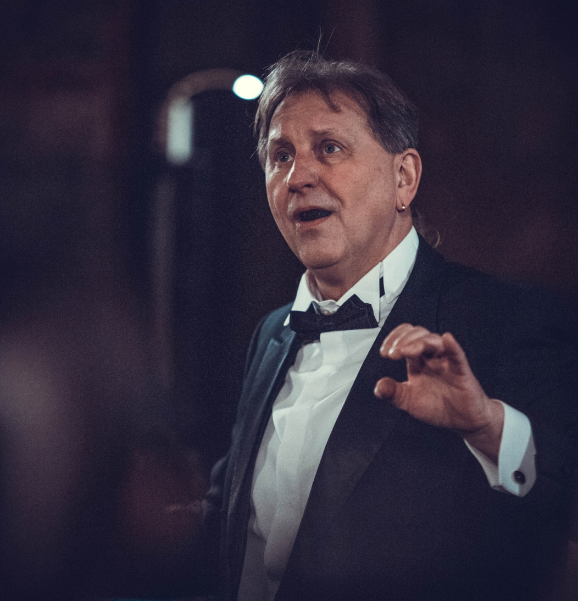
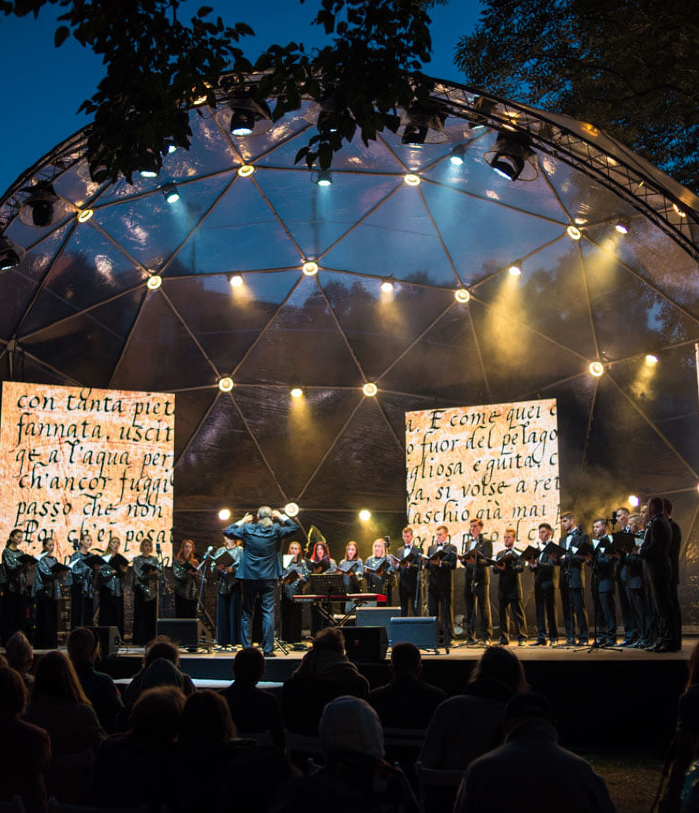
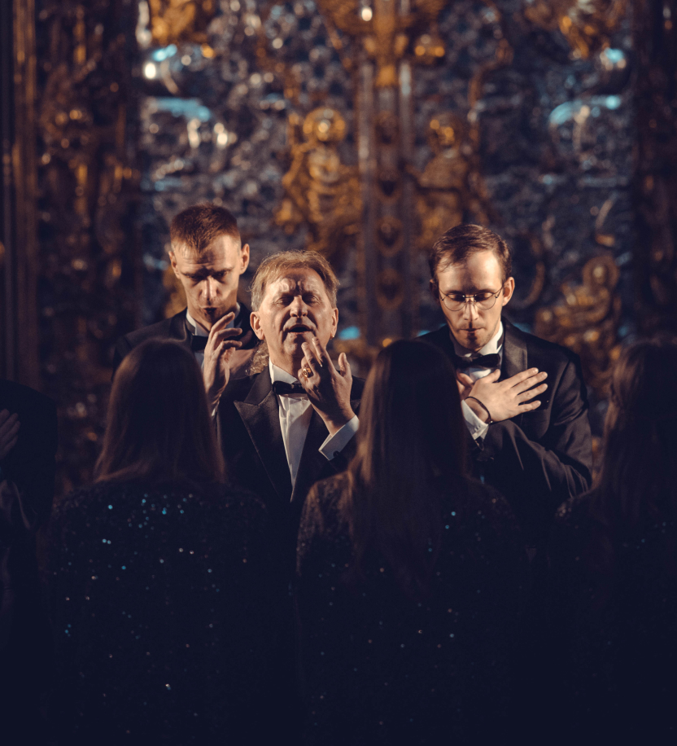

Микола Миколайович Гобдич
Основні досягнення
Микола Миколайович
є володарем численних нагород, премій та відзнак за свій внесок у розвиток української культури:
-
1997
Заслужений діяч мистецтв України
-
2006
Лауреат Національної премії України імені Тараса Шевченка
-
2018
Народний артист України
28.04.1961
Народився у селищі Битків Івано-Франківської області
1978
Закінчив Дрогобицьке музичне училище
1983
Розпочав свою творчу кар'єру у світі музики з посади хормейстера у Чоловічій хоровій капелі імені Левка Ревуцького
1984
Працює диригентом у Національній заслуженій академічній капелі України «Думка»
1985
Закінчив Київську консерваторію
1990
Заснував хор з символічною назвою «Київ», обрав йому за логотип образ одвічного покровителя Києва та всієї України — святого Архистратига Михаїла
1997
Започаткував один із найпрестижніших всеукраїнських фестивалів — «Золотоверхий Київ»
2006
працює на кафедрі хорового диригування КНУКіМ, викладач диригування, професор

Міжнародний успіх
Микола Гобдич здобув визнання на світовій арені завдяки своєму таланту та працьовитості. Він піднімає українське хорове мистецтво на світовий рівень, виступаючи на славетних сценах, таких як Карнегі-холл у Нью-Йорку, концертні зали у Лондоні, Берлінський собор та інших престижних музичних майданчиках. Участь у багатьох міжнародних фестивалях та конкурсах по всьому світу дозволяє йому прославити українську культуру та хорове мистецтво.
22
країни світу чули виступ хору Київ під керівництвом Миколи Гобдича

2000
цю цифру перевищила кІлькІсть концертів хору за роки роботи

Спадщина
та мистецтво
Микола Миколайович також активно працює над розшифруванням та виданням забутих або заборонених творів українського хорового мистецтва. Він заснував видавництво «Бібліотека хору Київ», яке випустило понад 200 творів української музики від 17 століття до сьогодення. Також Микола Миколайович є засновником фестивалю хорового співу «Золотоверхий Київ».
50
кількість дисків, записаниХ хором «Київ» під керівництвом миколи гобдича
